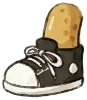
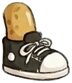
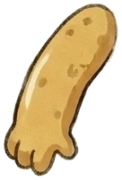
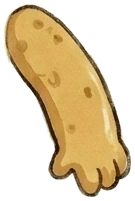
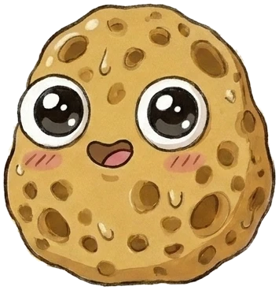
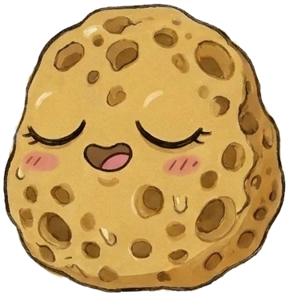
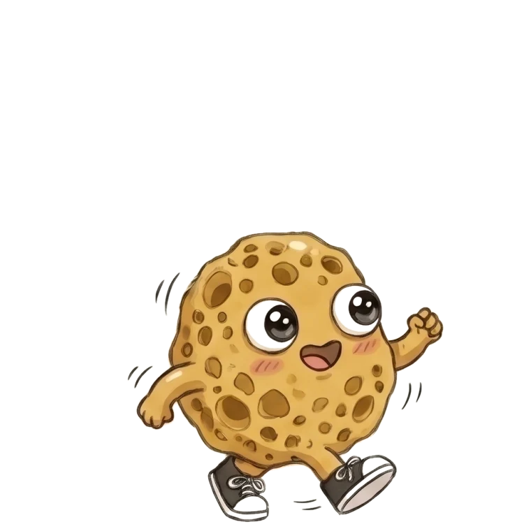

Pofi köşede.






25:00
Ayarlar
Telefonun kamerasıyla okut. Mola bitince telefonun haber verir.

Pofi denize dönüyor
Pofi bir deniz süngeri, masana düşmüş. Sen çalışırken bekler, molada seninle yürür. Seans bitince Pofi denize dönmüş olacak.
Bugün kaç oturum?
HikâyesiPofi köşede beklesin
Tek tıkla Pofi'yi ekranın köşesindeki küçük bir pencereye alın. Başka sekmede çalışırken de sayaç gözünüzün önünde kalır.
Önce ana ekrana ekle
iPhone bildirimi yalnız ana ekrandaki uygulamaya gönderir.
- Alttaki Paylaş simgesine dokun.
- Ana Ekrana Ekle'yi seç.
- Pofi'yi ana ekrandan aç, bildirimi orada aç.